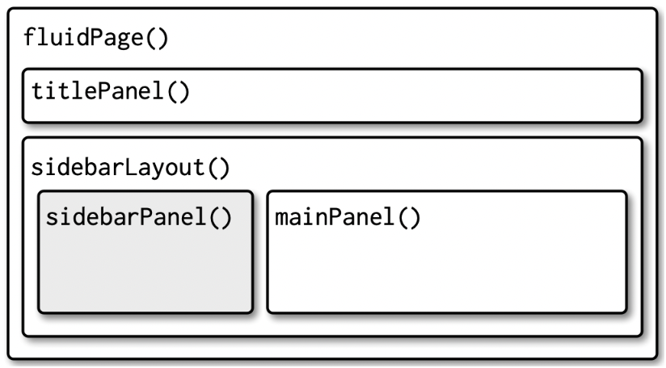

library(shiny)
ui <- fluidPage(
# app appearance
)
server <- function(input, output) {
# app's internal mechanisms
}
shinyApp(ui = ui, server = server)Shiny Apps
class notes

Why Shiny Apps?
Shiny apps are incredibly useful tools in the following scenarios:
As supporting materials to a paper, aimed at increasing reader engagement1.
Throughout project development, to share partial results with your team.
App Development in R: Basic Principles
Until now, we have resorted to imperative programming, that is to say, a programming style characterized by explicit sequences of commands designed to carry out various tasks2. In other words, we would issue a specific command and have it carried out immediately.
In order to develop apps, we will be switching to reactive programming, a paradigm that allows us to automatically update outputs when inputs change. We will therefore express our commands as functions of user input (that is to say, our programs will react to the choices and actions of the user) (Wickham 2021).
Shiny apps can be easily designed using R language; they therefore allow those not versed in web design to quickly build a reactive site to explore information3. Shiny essentially acts as a translator, allowing us to convert R code into HTML, the language of web development. This means that you can use R (a high-level language designed for statistical and data analysis) to create interactive web applications without delving into the complexities of traditional web development languages. It’s a bridge that simplifies the process of turning your data-driven R scripts into user-friendly, interactive web interfaces.
A Shiny app has two main components (Wickham 2021):
A user unterface (ui), which defines how your app looks. It contains the widgets4 to receive the input from the user and also display the outputs.
A server, which defines how your app works. It receives the inputs from the ui and with them generates the outputs.
In this interactive setup, users will manipulate the ui (sending inputs to the server that will reflect their choices and actions), which, in turn, will cause the server to update the ui’s display (by running R code according to the instructions defined in our program and presenting an updated version of the outputs).
In a Shiny app, user interface elements and server-side functions are associated with each other through unique corresponding ids5. Each specific user input is identified with a unique id which is later used to reference and manipulate that specific ui element on the server side6.
Implementation
The main package we will be using in order to build apps in R is the shiny package7. In order to get our shiny app to work8, we will first create the objects server and ui9, and we will then proceed to combine both elements using the shinyApp(ui,server) function10. Basically, the structure of our code will be the following:
After completing the app design, we can initiate it by clicking on the Run App button located in the top right corner of the RStudio interface11.
User Interface
The user interface will include the inputs, outputs and layout functions that will define the general appearance of the app12. For example:
ui <- fluidPage(
titlePanel("The app's title"),
sidebarLayout(
sidebarPanel(
numericInput(inputId = "my_first_input",
label = "A clear description for the user to see"
#,... other parameters
),
textInput(inputId = "my_second_input",
label = "A clear description for the user to see"
#,... other parameters
),
actionButton(inputId = "go",
label = "Update!"
#,... other parameters
)
),
mainPanel(
plotOutput(outputId = "my_first_output")
)
)
)Layout
Layout functions can be combined or nested in order to design our desired layout. In our example, the fluidPage() function defines the general layout of the site: a fluid page layout consists of rows which in turn include columns13. However, note that after defining our titlePanel(), nested inside our fluid page you can find another layout function: sidebarLayout(). This is a predefined layout featuring a sidebar14 (typically used for inputs) and a main panel15 (where you will usually find the outputs).

Using the shinythemes package16, we can also change the theme of the app using theme = shinytheme("the_theme_we_want")17 inside our general layout function18.
Considering a Shiny app’s ui is an HTML document, it is possible to include tags such as h1("Header 1") for a level 1 header, br() to insert a line break or a(href="", "link") to define a hyperlink19.
Inputs and outputs
Multiple input functions exist, including numericInput(), textInput(), selectInput(), and checkboxInput(), among others: each one corresponds to a different type of input to be collected from the user (a numeric value, a string, etc.). All input functions share two core parameters: inputId for specifying the unique identifier and label to inform the user the expected input content. Additionally, each input type may have further parameters tailored to its specific characteristics, such as potential values (a vector of options for the input selection, maximum or minimum values for numeric inputs, etc.) and default values.
Similarly, output functions such as plotOutput(), dataTableOutput(), imageOutput() or textOutput() will specify the type of output. In this case, the main parameter will be outputId, used to specify the unique identifier.
When designing visualizations in a Shiny app, it is usually a good idea to create interactive visualizations using the
plotlypackage.
Server
The server object will be defined as a function with two main arguments20:
input: It is a list of elements that we receive from the ui. In this case it containsmy_first_input,my_second_inputandgo(the inputIds).output: It is a list that we generate inside the server. In this case we only define the elementmy_first_output.
For example:
server <- function(input, output) {
output$my_first_output <- renderPlot({
hist(c(1:input$my_first_input), main = input$my_second_input)
})
}In order to create our outputs, we will resort to render functions within the server. These functions are responsible for dynamically generating the content of each output element based on the inputs (in order to do so, we will refer to each input using the syntax input$input_id). Note that there must be a correspondence between the type of output defined in the ui and the render function.21
In our example, renderPlot() is a reactive function, which is triggered every time the input changes and re-generates the output (in our example, a plot)22. In other words, everything that is wrapped between the braces is going to be run each time the input changes.
We may not want everything to re-run and update every single time any input changes but only in response to specific events (for example, update only if the user clicks on our “Update!” actionButton)23. In this case, we may resort to functions such as eventReactive(), which will create the reactive expression with code in its second argument (that is to say, the expression between curly brackets) when reactive values in the first argument change (in this case, input$go)24. For example:
server <- function(input, output) {
plot <- eventReactive(input$go,
{hist(c(1:input$my_first_input),
main = input$my_second_input)
})
output$my_first_output <- renderPlot({
plot()
})
}Notice that plot is now a reactive expression, and we therefore have to call it like a function (that is to say, plot()) inside renderPlot(). However, while it looks like we are calling a function, a reactive expression has an important difference: it only runs the first time it is called and then it stores its result until it needs to be updated (Wickham 2021).
Data preprocessing
Usually, our app won’t solely depend on user inputs but will also make use of additional databases25 that we load ourselves (the developers). To prevent excessive processing times (and ensure smooth app performance), we can preprocess much of this data externally and then simply load the prepared databases for the app server to operate on.
Thus, in our working directory we will typically have a file named prepare_data.R where we will handle all of these preprocessing tasks.
Taking our apps to the next level
As you aim to create more complex apps, you’ll discover that this basic script design can become cumbersome. It may result in excessively lengthy and intricate scripts, riddled with multiple nested functions (and long lists of ids26), which can increase the likelihood of errors when attempting to make modifications to the app. The solution: modules27.
A module is basically a pair of ui and server functions, but these functions are constructed in a special way that creates a “namespace” (“spaces” of “names” that are isolated from the rest of the app). Namespacing makes it easier to understand how your app works because you can write, analyse, and test individual components in isolation (Wickham 2021).
In order to get your app to work, in your main app.R script you will summon all your module’s ui and server functions:
library(shiny)
ui <- fluidPage(
module1_ui("id1"),
module2_ui("id2")
#,.....
)
server <- function(input, output, session) {
module1_server("id1")
module2_server("id2")
#.....
}
shinyApp(ui, server) Note that you should use the same id in both the module’s ui and server, otherwise the two pieces will not be connected. However, the ids you use to identify inputs and outputs inside each module don’t need to be globally unique, they just have to be unique inside each module.
Recap: Directory structure when working with modules
app.R
prepare_data.R
R /
module1.R
module2.R
….
Discussion
Tools such as Shiny apps play a vital role in the democratization of data analysis tools and the participation of the general public in scientific research. Traditionally, data analysis capabilities were confined to experts and researchers with specialized knowledge. However, tools such as Shiny apps have broken down these barriers, which allows more engagement from readers and the general public, fostering a collaborative and inclusive approach to data-analysis.
One of the significant benefits of using Shiny apps lies in the customization of access to data. Users can not only access raw data but also possess the capacity to perform data analysis according to their needs and interests even if lacking data literacy. While raw data might be rich in information, presenting it in a clear and interpretable manner is vital. In this regard, Shiny apps excel in providing tools that distill complex data into intuitive, user-friendly displays.
References
Wickham, Hadley. 2021. Mastering Shiny: Build Interactive Apps, Reports, and Dashboards Power by R. First Edition. Sebastopol, CA: O’REILLY.
Footnotes
For example, this app is a supporting material of this article, allowing readers to independently explore the researcher’s findings.↩︎
Such as importing and exporting data sets, creating new objects, or applying transformations according to a specific set of instructions.↩︎
A widget is a web element that allows the user to send a message.↩︎
Besides being unique, ids must follow the same naming conventions as variables (no spaces, special characters, etc.)↩︎
Consider, for instance, a simple app where the user is prompted to provide their name and date of birth: we would assign each input an id, for example “name” and “date_birth”. We would later refer to these user inputs in our functions using this ids (for example, in order to display a personalized greeting message by addressing each user by their name or wishing them a happy birthday on the right date).↩︎
Throughout this section, we’ll be drawing on R’s official documentation on the subject.↩︎
We will usually save this script with a name such as app.R↩︎
Note that you may use any names you like for this objects, you will simply need to make sure to refer to the object in the same way when calling the
shinyApp()function. For example:shinyApp(ui = my_original_ui_name, server = my_original_server_name)↩︎For comprehensive information on various Shiny app design options, please refer to the Shiny Cheatsheet.↩︎
You can also run
shiny::runApp().↩︎Note that elements within the ui will be separated by commas!↩︎
This is the most commonly used layout (although there are other options to explore!)↩︎
We’ll include its contents within the
sidebarPanel()function.↩︎We’ll include its contents within the
mainPanel()function.↩︎The
bslibpackage also offers a function to change the app’s layout. In this case, the syntaxis istheme = bs_theme(…).↩︎In our example,
fluidPage(..., theme = shinytheme("the_theme_we_want")).↩︎Try running
names(tags)to get a complete list of all possible tags.↩︎It can optionally include
sessionas a parameter: an environment that can be used to access information and functionality relating to the session. For more details, visit this site.↩︎For example: a
plotOutputwill be rendered with arenderPlot()function, animageOutputwill be rendered with arenderImage()function, etc.↩︎In addition to generating output based on the inputs provided, certain render functions, like
renderDataTable(), offer additional features, such as the possibility to download the rendered table in multiple formats.↩︎See for example this app’s “Change” button.↩︎
Similarly, a frequent use of the
observe()function is to update a certain input’s options considering a different input. For instance, consider a restaurant reservation app featuring two inputs: “restaurant” and “available_time_slots”. Since each restaurant has its unique set of available time slots, it’s essential to ensure that the time slot options align with the selected restaurant. Therefore, we will want to update the time slot options every time the user chooses a different restaurant.↩︎For example, the findings of a scientific article we authored, which we intend to share with the wider scientific community.↩︎
Keep in mind that ids must be unique, and any accidental repetition of an id will cause the app to fail!↩︎
In this class, we won’t extensively cover the implementation of modules, but you can refer to this text for more comprehensive instructions.↩︎